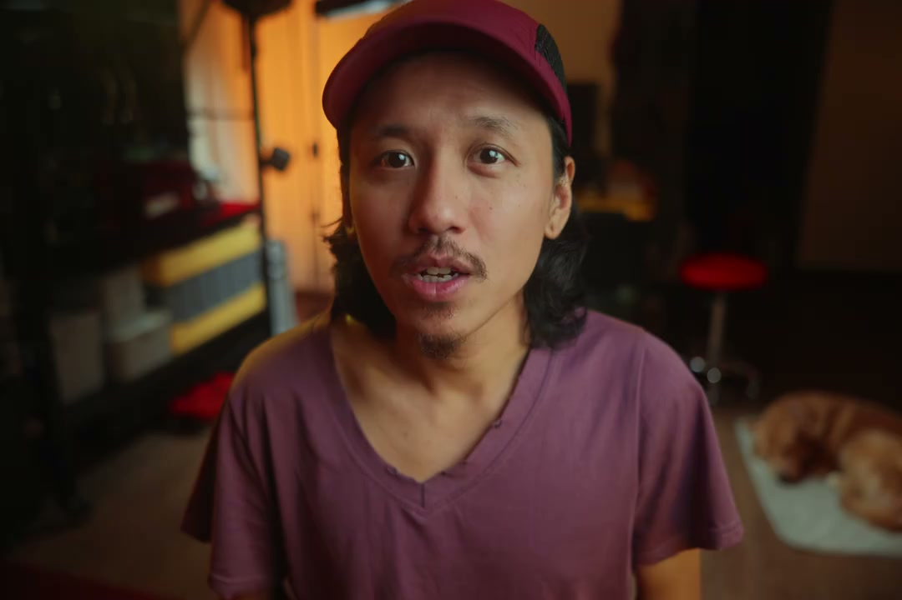
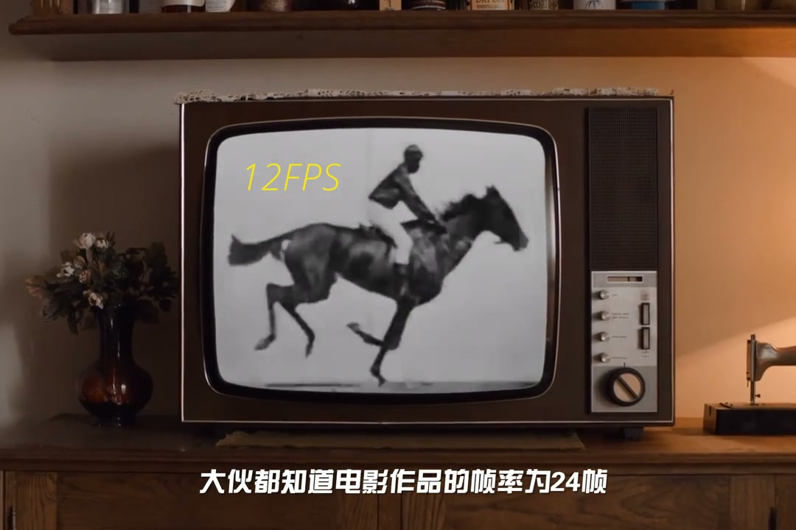
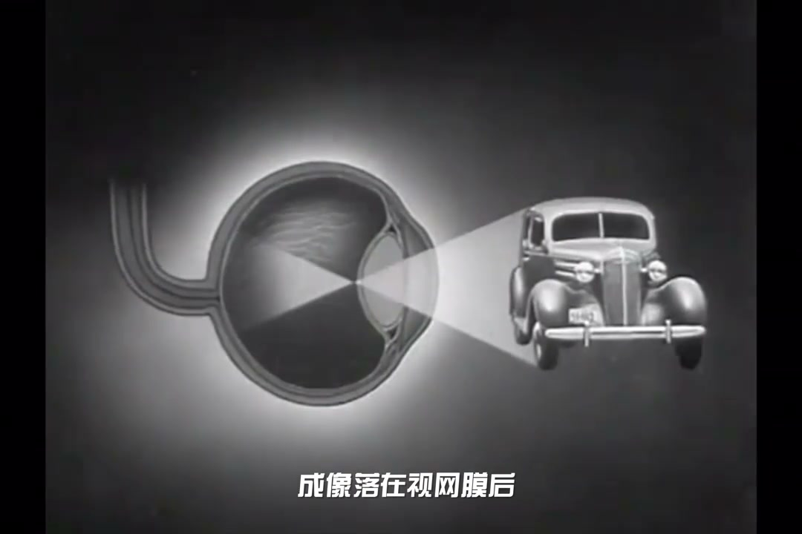
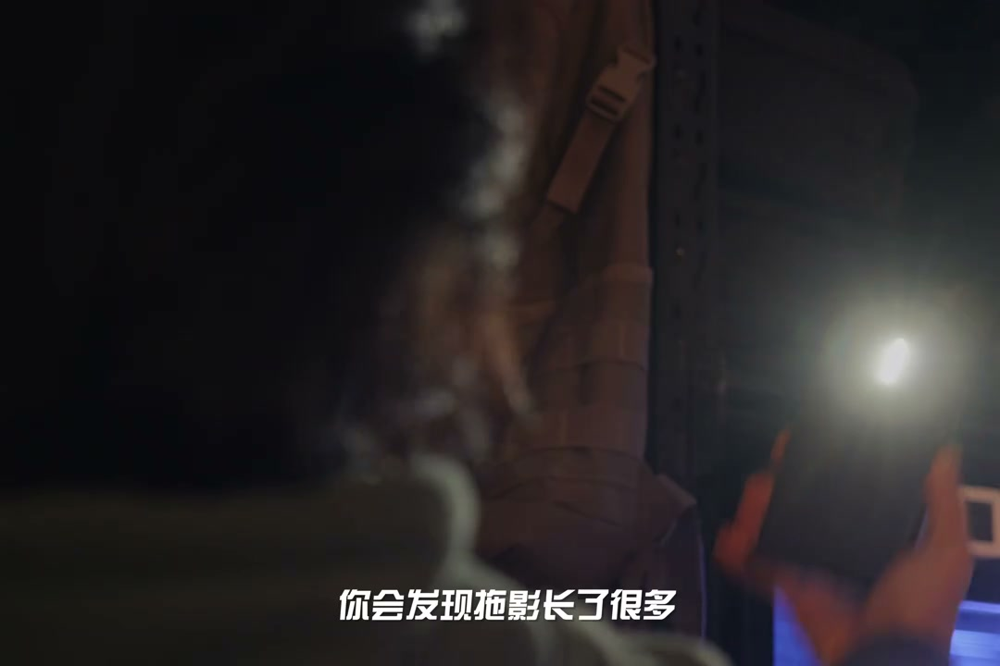
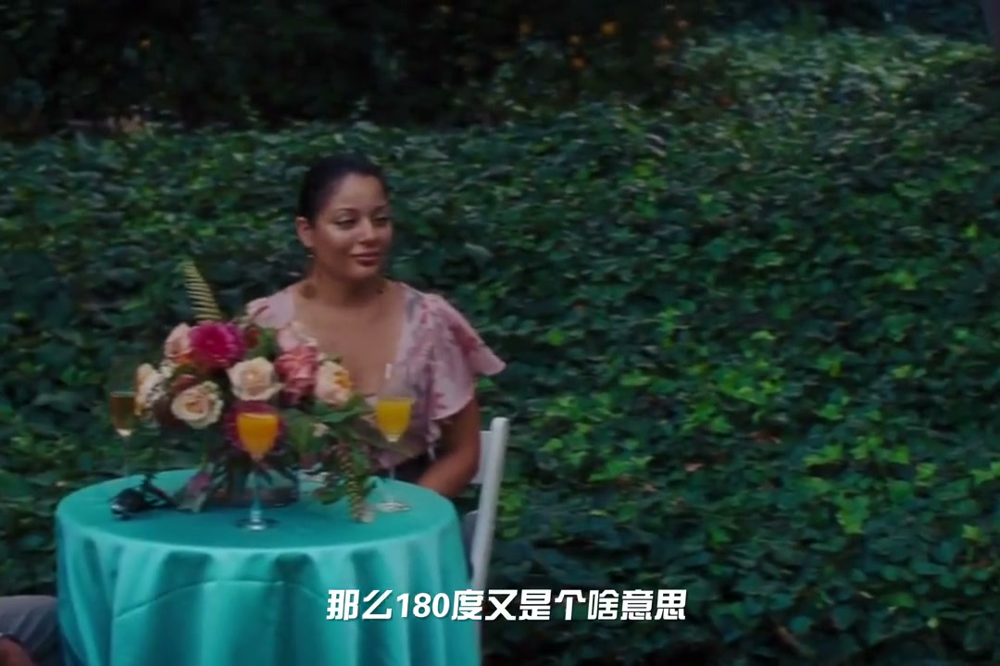
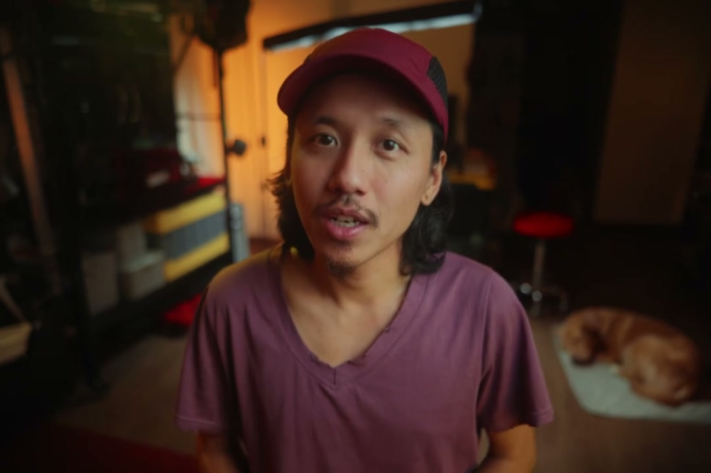

内容要点
[00:00] 出于艺术的考量
[00:01] 感光度光圈我们都不可以调
[00:03] 那为何快门也不能调呢
[00:04] 简单的回答就是180度原则
[00:06] 为了电影感
[00:07] 但事实并没有那么简单
[00:09] 咱们拍照片的时候
[00:11] 如果画面太暗
[00:12] 我们最直觉的反应就是简慢快门
[00:14] 力干见影 非常奏效
[00:16] 但一旦到了拍视频
[00:18] 调节快门可是犯了大忌
[00:19] 电影的快门速度只有一个
[00:21] 那就是48分之1秒
[00:23] 大伙都知道电影作品的帧率为24帧
[00:25] 每秒钟在你眼前快速播放24张图片
[00:28] 让大脑会支出连贯动感的错觉
[00:31] 很多朋友误以为人影的帧率也是24帧
[00:34] 其实这是错误的
[00:35] 人影的帧率也是动态的
[00:36] 或许说是持续的
[00:38] 在这个生物皮脑里
[00:40] 没有一个恒定帧率的机制
[00:42] 完全取决于你的注意力和生命机能
[00:45] 电竞选手可以分辨144Hz
[00:47] 和240Hz显示器高刷的区别
[00:50] 当我们生病了或者醉酒状态下
[00:52] 也能看见王家卫电影里
[00:54] 常曝光降格的拖影
[00:56] 而光线通过晶体
[00:57] 成像落在视网膜后
[00:59] 感光细胞产生的化学信号不会瞬间消失
[01:02] 大概会持续10分之1到15分之1秒
[01:05] 那么大脑会合成这段时间内
[01:07] 光所发生的所有变化成为一段快照
[01:10] 被称之为视觉战流
[01:12] 所以感知上动态模糊是一小段时间内
[01:15] 视觉发生所有变化的一个重叠
[01:17] 我们可以做一个小实验
[01:18] 找一个昏暗点的地方
[01:20] 举起你的手臂
[01:21] 快速在眼前挥舞
[01:23] 你会看到手运动时会产生拖影
[01:25] 现在拿出手机打开手电筒
[01:27] 对着眼睛开到最亮
[01:29] 同样再挥舞一遍
[01:31] 你会发现拖影长了很多
[01:33] 这是因为手电筒的光
[01:34] 造成更强的刺激
[01:36] 感光细胞需要更长时间恢复敏感度
[01:39] 所以停留在视网膜的时间更长
[01:41] 人类可以根据这条拖影轨迹
[01:44] 判断进入视线的物体
[01:45] 从哪个方向来
[01:46] 预测将要往哪个方向去
[01:48] 帮助我们在物理世界里运动
[01:50] 狩猎 躲避危险
[01:52] 这就是人眼产生动态模糊的原理
[01:55] 说回标准帧率
[01:56] 电影工业音乐时期
[01:57] 曾建议过使用16帧每秒作为标准帧率
[02:00] 但后期有了同机身的加入
[02:02] 设定一个兼容声音画面
[02:03] 并且稳定播放的标准帧率
[02:05] 成为了不得不解决的问题
[02:07] 随之才有了24帧每秒的标准
[02:09] 所以24帧每秒
[02:11] 既不是人眼感知动态的极限帧率
[02:13] 也不是能够形成动态错觉的最低帧率
[02:16] 但是如果播放的画面过于清晰
[02:19] 人眼能开始觉察到眼前播放的
[02:21] 并不是连观影像
[02:22] 而是一张张单独的图片
[02:24] 特别是大范围的运动
[02:26] 很容易打消错觉
[02:27] 哪怕是24P
[02:29] 带正确运动模糊的水平摇进画面
[02:31] 依然会给人一卡一卡的感觉
[02:35] 那么180度又是个啥意思
[02:37] 以前的快门
[02:38] 市场这样的一个圆盘
[02:39] 漏空的地方是允许美真画面曝光的时长
[02:42] 折挡的地方
[02:43] 是让摄影机更换下针胶片的时长
[02:46] 漏空的缝隙越小
[02:47] 代表曝光时长越短
[02:48] 画面越锐利
[02:50] 动态模糊越小
[02:51] 180度的漏空角度
[02:53] 形成折中自然的动态模糊
[02:55] 所以就算现代摄影机快门结构
[02:57] 已经完全改变
[02:58] 我们依旧沿用当年的快门角度原则
[03:01] 当然180度快门是人定下的规矩
[03:03] 它是可以打破的
[03:05] 比如战争动作片
[03:06] 士兵处于高度危险时
[03:08] 圣上线速爆发
[03:09] 身体技能提升
[03:11] 允许他们看得更快更广
[03:12] 注意力更集中
[03:14] 那么电影人
[03:15] 通过提高快门速度
[03:16] 模拟战争现场感
[03:18] 反之有王家卫的爆款漫门
[03:20] 就不用我多解释了
[03:21] 所以快门只有一个
[03:23] 不仅是48分之1秒
[03:25] 而是不同针对下
[03:26] 统一用180度原则设置快门
[03:28] 攻势是针对的两倍分之一
[03:30] 之所以是180度
[03:32] 因为这个原则
[03:33] 是工业历史的遗产
[03:34] 而电影标准被沿用了100多年
[03:36] 已经在人类文明GT机翼中
[03:38] 形成视觉烙印
[03:39] 我们本能认为这就是电影感
[03:41] 以后会不会被推翻替代
[03:43] 真的不好说
[03:44] 但当下我们该遵守的还是得遵守
[03:47] 感受看这期尊摄影
[03:48] 我是老粹
[03:48] 我们下期再见





